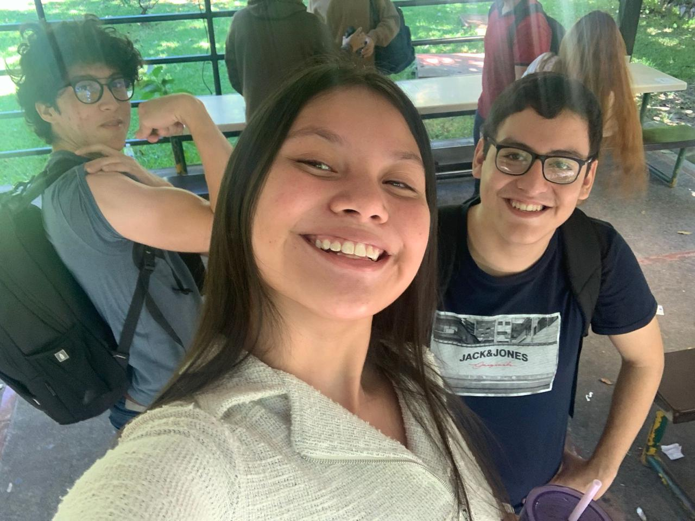

Education
- Early Childhood Education:
- Primary School Education:
- Secondary School Education:
- Higher Education:
I went to Esparza school in Antiguo Cuscatlan to do kindergarten when I was 5 years old, I learned to read and write, I made many friends, since I was a little girl I liked studying, for which I was always one of the students who stood out in the classroom, that same year I participated as a puppet for the parade of September 15, the month of independence.
I also participated in a swimming competition on behalf of the school, I learned to swim when I was 4 and a half years old, and I got the third place. At the end of the school year I also won first place for best grades, I enjoyed going to school, spending time with my friends and my favorite teacher.
I went to kinder 6, and it was a difficult year at first, because I had an accident playing with one of my cousins and I broke my right arm hahaha, they put me in a cast and I was wearing it for about a month, it was hard to get used to it, because it was my arm with which I wrote, and I had to learn to write with my left hand, and I did not like it because my handwriting was ugly hahaha. After that stage it was fun, because they removed the cast and I could write with my right hand again, a month later my birthday was coming and my mom celebrated it at school with my classmates, my cake was my favorite fairy tinker bell.
That same year I had my graduation, and we started with the preparations, practicing dances, learning scripts, and many other activities, I had the honor of being the master of ceremony for being the student with the highest grades, and having a much more advanced reading than my classmates. My favorite part of the graduation was when we had the dance and I went out dressed with my classmates as a ballet dancer, I had my tutu and my slippers hahaha.
I also had the honor of receiving the first academic place when I received my diploma and the school gave me a half scholarship to continue studying. At the end of the night I felt very happy for all that I had achieved and learned, at the same time I felt sad because several friends had to leave the school, and I would not see them again.
I went to my first grade, and I started my first cycle, I also continued to try as hard as I could, at the end of the first year I won the first academic place again, but this time I could no longer continue studying at school due to personal problems, my mom had to take me out and I entered another school.
This school was called Liceo Castilla, in which I was until my third grade, during those years I carried out many activities in which I participated, the school every year had an EXPO scheduled, where each grade was prepared to carry out scientific projects, I had the honor of taking second place in one of the EXPOS, I also participated 2 times in the parades of September 15, where the month of independence is celebrated in the country. I also participated for queen of the school, in which, a girl from each grade was chosen to represent her grade, the activity consisted of selling votes and the person who sold the most was named queen of the school and was in charge of attending all the events that the school was invited to, in which I also had the honor of winning and I was the queen of the school for a year hehe.
Then I finished the third grade, and they changed me again, this time they put me in a school, which is also located in Antiguo Cuscatlán, where I started the fourth grade. This drastic stage of coming from school and then going to a school was quite difficult for me to adapt to the program, but it was not impossible.
School Queen / Graduation
I continued my studies in that same place, until I finished my ninth grade, I obtained many changes as I grew and the years went by, likewise, I was always a very active student, I have always liked to participate in activities and relate to people, there I had a subject of modern dance, which consisted of performing dances which had been represented by the country, From the time she enters fourth grade until she finishes the third cycle, she participates in the dances every year. In ninth grade was the saddest stage, because the pandemic came and I could no longer participate in the dances, I did not have a graduation and much less promotion.
But also, when I was in eighth grade, a scholarship program arrived, to give us a talk about how the program consisted, they told us that they were 3 years, in which they offered 3 subjects, and the subjects were: English, Computer Science and Values. Only students with great potential and a very good average could participate, which my teacher chose me and told me that she wanted me to participate in the program that would be a great opportunity for me, and so it was, I chose to participate and won the 3-year scholarship, I ran the school and the program at the same time. My first year in the scholarship was the most difficult, because I started it when I started ninth grade, and in that year the pandemic happened and we had to be from home receiving the classes and all the material, I went to the second year of the scholarship, and I did the EXPO of our year, we had to prepare too much, learn scripts in English, and at the same time we make a website, in the second year is when students must choose a branch
In the area of computer science, since we would carry out certifications using the programming language we chose, we had the options to specialize in: BackEnd, FrontEnd and Data Analyst, and I chose the BackEnd branch, it was quite difficult at first to learn how to use the programs, but in the end in our EXPO we demonstrated with our website everything we had learned. I went to the third year of the scholarship and this time we were promoting the program, it felt so fun, but at the same time there were many mixed feelings since we knew that it was our last year as interns, in that year we began with the preparations for the certifications of programming languages, as well as with those of MOST EXCEL and TOEIC English, We had to study and prepare too much to be able to pass the certifications.
We also began to attend university fairs, so that we would have the opportunity to learn more about the career we wanted to study and thus also be able to observe the university that best suited us with what we wanted to study at the same time. At the same time I was studying high school at school, where I met many people, I had the opportunity to participate in the activities of the institution, and I started with the preparations for the graduation of both places, the school and the scholarship program, I had to rehearse scripts since I was master of ceremony, first I had the graduation of the high school, which was very exciting for me who had already finished that academic stage, two months later I had the graduation of the program ¡Superate! which was where I was on a scholarship, I looked forward to that day since it had been the most beautiful stage I had ever had, I was too happy for my friends who were graduating together,
Graduation 2022 / 2023

Intercentros / Promo / Feria de Universidades 2022 / 2023


After having attended university fairs I chose to enter the UCA, I started the admission process and since then everything has been falling into place, I started university in 2023, I am currently studying my fourth cycle, and without a doubt it has been a very beautiful path, I have been meeting wonderful people, super intelligent and very admirable. I hope in a few years to be able to say that I am finally a Computer Engineer!
UCA 2023 / 2024
